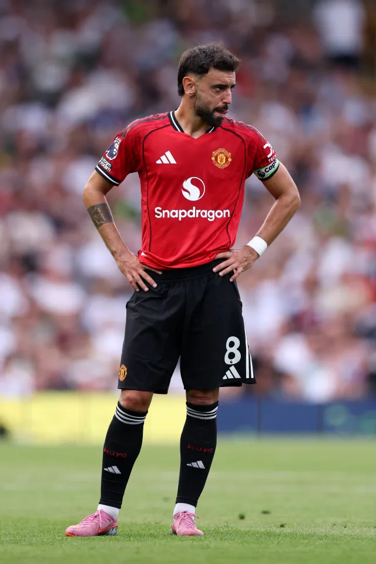
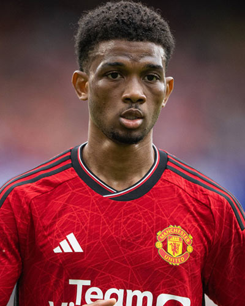
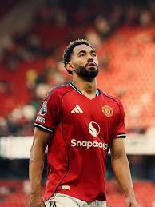
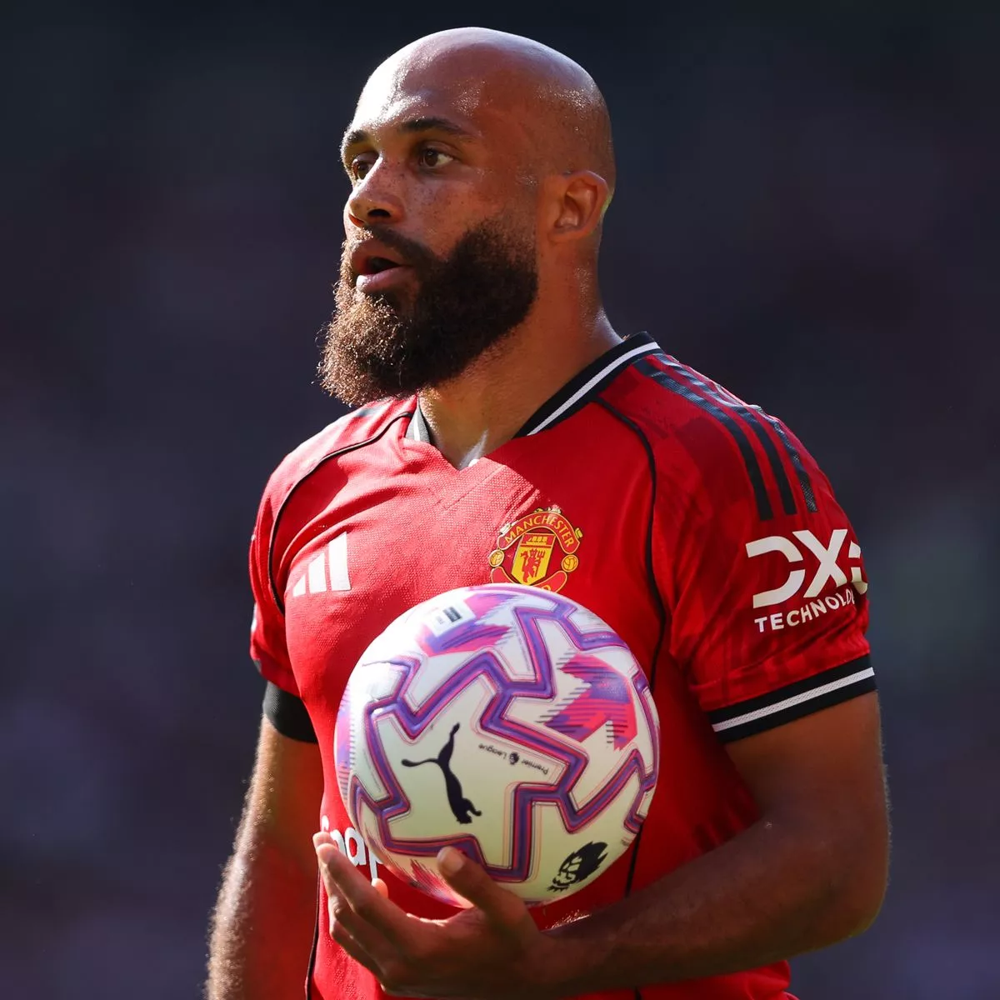
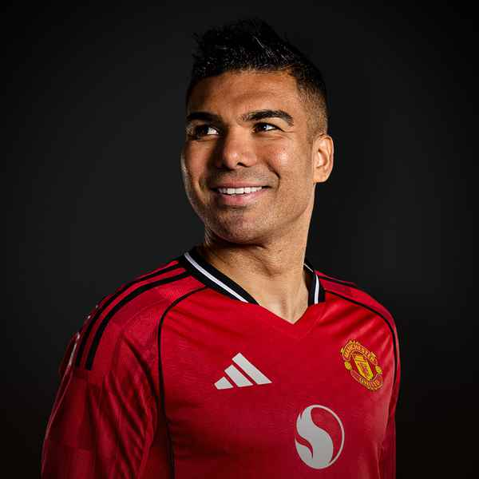

BRUNO FERNANDES
Captain. Creative attacking midfielder known for assists, vision, leadership and set pieces. After rising through youth football in Portugal and playing in Italy, Fernandes returned to Portugal with Sporting CP where he established himself as a top attacking midfielder. In January 2020 he signed for Manchester United and quickly became one of the club’s key playmakers, known for his goal-scoring, chance-creation and leadership on the pitch.
AMAD DIALLO
Young winger with pace, skill and close control. Can play wide or centrally.
MATHEUS CUNHA
Versatile forward with strong link-up play, aggression and flair in the final third.
BRYAN MBUEMO
Dynamic attacker known for pressing, pace and goals cutting inside from the right.
CASEMIRO
World-class defensive midfielder with elite tackling, leadership and experience.
